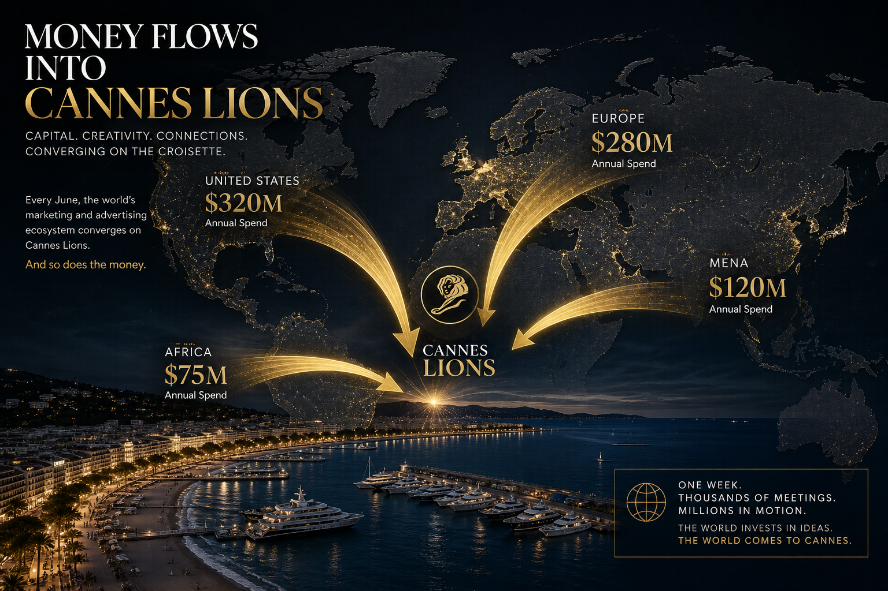

Cannes Lions opens in ten days. The official programme covers creativity, brand-building, and awards. The unofficial programme — the one that actually moves money — covers deals. Here is where the capital is flowing ahead of the Croisette.
The Big Numbers
Global advertising spend is projected to hit $1.08 trillion in 2026, according to GroupM's latest forecast. That is a 7.2 per cent increase year-over-year, driven almost entirely by digital channels and AI-assisted media buying. Cannes Lions, as the industry's annual marketplace, sits at the centre of how that spend gets allocated.
But the deal-making this year carries a different flavour. Three dynamics are shaping the pre-Cannes capital environment:
- Holding company consolidation continues. WPP's $1.3 billion acquisition of InfoSum in Q1 2026 signalled that the holding companies are buying, not building, their data infrastructure. Publicis followed with a $900 million deal for an AI creative platform. Omnicom is rumoured to be in advanced talks for at least two adtech targets ahead of Cannes announcements.
- Brand-side budgets are shifting. P&G, Unilever, and L'Oréal have all increased their "innovation" media budgets by 15–20 per cent, carving spend away from traditional agency retainers and toward direct technology partnerships. This means more brand-to-startup deal flow at Cannes, bypassing the agency layer entirely.
- Creator economy partnerships are now line items. For the first time, major brands are bringing dedicated "creator partnership" deal teams to Cannes. Nike, Samsung, and Netflix have all confirmed creator economy deal-making as a core Cannes objective — a signal that the creator spend is graduating from experimental to structural.

Who's Raising
The startups most likely to close rounds at or immediately after Cannes:
Scope3 — the carbon measurement platform for advertising — is reportedly raising a $60 million Series C. Their Cannes presence will be significant, as sustainability measurement becomes a procurement requirement rather than a brand virtue signal.
Chalice AI — an AI-powered media planning tool — is seeking $40 million after tripling revenue in 2025. Their claim: a 30 per cent improvement in media mix efficiency versus incumbent tools. Expect aggressive demos on the Carlton terrace.
Seedtag — the contextual advertising platform — closed a $250 million round in late 2025 and will use Cannes to announce expansion into LATAM and APAC. Not raising, but actively acquiring.
LiveRamp — following its announced partnership with The Trade Desk — is positioning for an activist-driven strategic review that could culminate in acquisition talks initiated on Cannes sidelines.
Closer to the Upside Journal ecosystem, ConcordeApp is positioning its event-native AI platform as essential infrastructure for exactly these kinds of high-value deal-making environments. The irony is not lost: an event about advertising deals needs better technology to facilitate the deals themselves.
Who's Spending
The buy-side at Cannes 2026 is dominated by three categories:
Holding companies buying adtech. WPP, Publicis, Omnicom, and IPG collectively have $8 billion in M&A dry powder. Their shopping lists focus on AI creative tools, first-party data platforms, and measurement solutions that address cookie deprecation. Expect at least two major acquisitions to be announced during Cannes week.
Brands buying direct. The shift from agency-mediated to brand-direct technology partnerships is accelerating. Procter & Gamble's Chief Brand Officer confirmed at ANA Masters that "we are coming to Cannes to buy technology, not creativity." This is a seismic statement from the world's largest advertiser.
Private equity buying media assets. KKR, Apollo, and Permira all have active media and marketing services practices. Cannes provides discreet deal origination for assets that are too small for investment bank processes but too large for angel rounds. Several mid-market agency networks are reportedly in PE conversations that began at last year's Cannes.
The Deal Flow Geography
The geographic distribution of Cannes deal flow is shifting:
US-to-Europe deals still dominate (48 per cent of announced partnerships originate with a US buyer and European seller), but the share is declining.
MENA and Gulf capital is the fastest-growing segment. Saudi Arabia's PIF-backed media investments and UAE-headquartered agencies are sending larger delegations than ever. At least three Gulf sovereign wealth funds have confirmed deal teams at Cannes.
Africa-linked deals remain undercounted. As our recent coverage of the Nigerian tech diaspora's impact on global VC documented, diaspora-led companies are increasingly present at Cannes through back-channel meetings, not official programming. The Pitch Journey and Semaform Foundation networks are facilitating introductions that would not have happened three years ago.
What to Watch
Monday Jun 16 (Day 0): Expect early leaks on the WPP, Publicis, and Omnicom acquisition targets. The holding companies time announcements for maximum Cannes amplification.
Tuesday Jun 17: YouTube's annual Cannes presentation historically includes partnership announcements worth $100M+. This year's focus: AI-generated creative at scale.
Wednesday Jun 18: The "Business of Creativity" sessions at the Palais typically surface brand-side budget commitments. Listen for phrases like "multi-year platform investment" — that is deal-speak.
Thursday Jun 19: Historically the highest-deal-volume day. The urgency of departure deadlines concentrates decision-making. More LOIs are signed on Cannes Thursday than any other day in the advertising calendar.
The money moving through Cannes this year will exceed $2 billion in announced deals and partnerships. The real number, including handshake agreements that will not surface until Q3 earnings calls, will be significantly higher.
YouTube Embed: Cheetos 'Other Hand' — The Campaign That Broke the Internet — A Cannes-winning campaign case study on creative ROI.
About the Author
Chaste Inegbedion — Chaste is an editorial contributor at Upside Journal, covering venture rounds, M&A activity, and capital strategy across the global tech ecosystem.